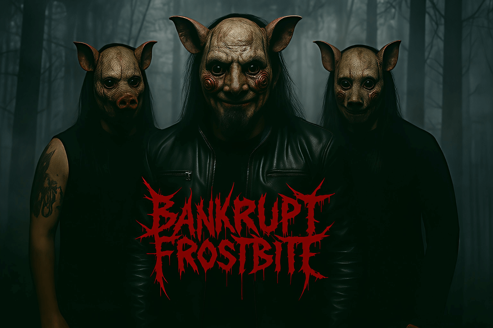

BIOGRAPHY
Bankrupt Frostbite was founded in 2004 when three unemployed students from Havukoski had nothing better to do than make foolish music. Bankrupt Frostbite is mainly a metal band, mixing everything that sounds ridiculous, such as cowbell and scissors. They released their first and so far only EP 06.06.2006. The date was picked to avoid confusion between European and American date formats.
In 2024, the band tried to create their own energy drink, Frostbite Fury, which unfortunately tasted like a mixture of regret, rust, and questionable choices. However, due to a packaging misprint, each can contained a QR code that linked to a manifesto titled “How to Take Over the World on Tuesdays.” This was meant to be a joke, but it was taken seriously by approximately seven people across Europe.
As a result, Bankrupt Frostbite briefly appeared on a government watch list before being removed when officials realized the band could not even coordinate a band rehearsal, let alone world domination.
In 2021, Bankrupt Frostbite attempted to rebrand as a post-industrial micro-opera collective, performing a three-hour opera titled “Screams of the Refrigerator That Knows Too Much.” The opera was staged inside a hardware store during business hours, causing multiple customers to assume it was an experimental advertisement for power drills.
They continue performing in unexpected locations - most recently a parking garage where they were not booked but simply found good acoustics next to a broken vending machine.